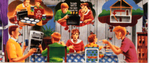

American Red Cross
American Red Cross
Are you ready for a Tornado? American Red CrossReprinted by Permission of the American Red Cross (1997)
Here’s what you can do to prepare for a Tornado.
Pick a place where family members could gather if a tornado is headed your way. It could be your basement or, if there is no basement, a center hallway, bathroom, or closet on the lowest floor. Keep this place uncluttered.
If you are in a high-rise building, you may not have enough time to go to the lowest floor. Pick a place in a hallway in the center of the building.
Assemble a Tornado Safety Kit containing:
First aid kit and essential medications
Battery-powered radio, flashlight, and extra batteries
Canned food and can opener
Bottled water
Sturdy shoes and work gloves
Also include in the kit written instructions on how to turn off your home’s utilities
Conduct periodic tornado drills, so everyone remembers what to do when a tornado is approaching.
Listen to your local radio and TV stations for updated storm information
Know what a tornado WATCH and WARNING means:A tornado WATCH means a tornado is possible in your area.
A tornado WARNING means a tornado has been sighted and may be headed for your area. Go to safety immediately.
Tornado WATCHES and WARNINGS are issued by the county or parish.
Listen to local radio and TV stations for further updates.
Be alert to changing weather conditions. Blowing debris or the sound of an approaching tornado may alert you. Many people say it sounds like a freight train.
If you are inside, go to the safe place you picked to protect yourself from glass and other flying objects. The tornado may be approaching your area.
If you are outside, hurry to the basement of a nearby sturdy building or lie flat in a ditch or low-lying area.
If you are in a car or mobile home, get out immediately and head for safety (as above).
Watch out for fallen power lines and do not venture into the damaged area.
Listen to the radio for information and instructions.
Use a flashlight to inspect your home for damage.
Forget The Wizard of Oz notion that ‘twisters’ only happen in Kansas. Tornadoes have been reported in every state. And while they generally occur during spring and summer, they can happen anytime during the year.
With winds swirling at 200 miles an hour or more, a tornado can destroy just about anything in its path., Generally, there are weather signs and warnings that will alert you to take precautions.
Be prepared by having various family members do each of the items on the checklist below. Then get together to discuss and finalize your Home Tornado Plan.
Pick a safety spot in your home where family members could gather during a tornado. (If you have a basement, make it your safety spot.) Make sure there are no windows or glass doors in the area. Keep this place uncluttered.
Basement: ____ Yes ____ No
If yes, basement is your safety spot.
If no (or if you’re in a high-rise building), choose another
safety spot.
Location of safety spot:______________________________
If you live in a mobile home, choose another safety spot in a sturdy, nearby building.
Location of safety spot:______________________________
Put together a tornado Safety Kit in a clearly labeled, easy-to-grab box.
Location of Tornado Safety Kit:_______________________
Write instructions on how and when to turn off your utilities - electricity, gas, and water.
Instructions written:____________________(date)
Make sure all family members know the name of the county or parish where you live or are traveling, since tornado WATCHES and WARNINGS are issued by the county or parish.
Name of county/parish where you live:_______________________
Name of county/parish where you are traveling:________________
And remember...when a thunderstorm, tornado, earthquake, flood, fire, or other emergency happens in your community, you can count on your local American Red Cross chapter to be there to help you and your family. That’s been our role for more than 100 years.
ARC4457
January 1991